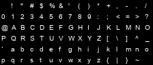

A & B use bold status, ordinary emphasis, and device documentation.
Inline color and a conservative background style are supported.
| Name | Value |
|---|---|
| Position | 52 percent |
command 42 value 52
A missing image deliberately uses its alternative text:
A local raster image follows:

This final paragraph is long enough to wrap in a narrow viewer and makes wheel, keyboard, and scrollbar behavior deterministic in the automated test.